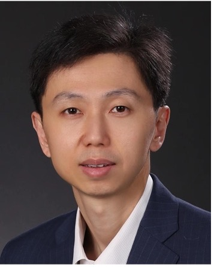
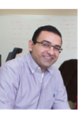

November 12, 2023
Hamilton, Canada
| Home | Organization | Registration | Program | Key Dates |
Keynote 1: From RF-based Sensing to RF Computing – Unremitting Exploration about RF Signals
Abstract:
Sensing and communication are primary tasks of an IoT system, where RF signals play increasingly important roles. The first half of this talk will briefly review the development of the RF-based sensing technology, which utilizes RF signals as information carrier. The second half of this talk will introduce our recent two works on backscatter and ISAC (integrated sensing and communication). Taking them as examples, we want to share our vision of RF Computing, which exploit RF signals as the objects of computing in future IoT systems. We will also discuss the research space in this direction.
Bio:
Yuan He is a tenured associate professor at the School of Software, Tsinghua University. He received his Ph.D. degree in the Department of Computer Science and Engineering, Hong Kong University of Science and Technology, his M.E. degree in Institute of Software, Chinese Academy of Sciences, and his B.E. degree in the Department of Computer Science and Technology, University of Science and Technology of China. Yuan He’s research interests include Internet of Things, wireless networks and communication, mobile and ubiquitous computing. He serves on the editorial board of journals like ACM TIOT, IEEE IoT Journal, and JCST. He has been a TPC Co-Chair of conferences like IEEE SECON 2022, EWSN 2019, and DCOSS 2018, and continuously served on the TPC of conferences like ACM SenSys, IEEE/ACM IPSN, and IEEE INFOCOM, etc. He has published more than 150 papers on prestigious conferences and journals and have received 5 best paper awards.
Keynote 2: AI Guardians - Harnessing the Power of Radar Technology for Enhanced Health Monitoring in Geriatric Care
Abstract:
Chronic diseases such as cardiovascular disease, respiratory illnesses, and diabetes are among the leading causes of mortality and morbidity worldwide. These conditions necessitate continuous patient monitoring to detect potential health deterioration and prevent future complications. Vital signs such as heart rate, respiratory rate, blood pressure, and blood glucose levels are crucial indicators in the detection, diagnosis, and management of these diseases. However, existing technologies may not be suitable for all patients and suffer from a plurality of deployment challenges. Recognizing the need for autonomous vital sign monitoring systems, particularly in the context of pandemics and remote healthcare, we have developed a suite of non-invasive radio-based sensors powered by artificial intelligence (AI). These sensors are designed for monitoring of health-related modalities, including vital signs, sleep apnea, respiratory diseases, gait, blood pressure, and glucose monitoring. In this presentation, I will review some of our earlier works using different RF and mm-Wave radar platforms, including the Google Soli platform. I will then delve into the process of our system development, as well as the validation campaigns of the performance of various developed sensors, alongside multiple demonstrations of the functionality of these devices in realistic environments, including hospitals and long-term care homes. Furthermore, I will discuss our ongoing and planned developments in the RF/mm-Wave and sub-THz radar technology, aimed at enabling a variety of future AI-powered health-monitoring cognitive platforms.
Bio:
Dr. George Shaker (Senior Member, IEEE) is an adjunct associate professor at the Department of Electrical and Computer Engineering at the University of Waterloo, Canada, where he is the director of the Wireless Sensors & Devices Lab. He is also a research scientist at the UW-Schlegel Research Institute for Aging where he is the founder and director of “THE MIRADA - Technology for Health Empowerment: Monitoring, Intervention, and Response for Aging Demonstration Apartment”. He has been the Principal Scientist and Head of Research & Technology at Spark Technology Labs (STL) since its founding in 2011. Prior to his current roles, he was with Research in Motion (BlackBerry) and Georgia Institute of Technology. Dr. Shaker has authored/coauthored more than 150 publications and has more than 35 patents/patent applications (11 of which are assigned to Google) in the broad area of applied electromagnetics. He has received multiple recognitions and awards, including the IEEE Antennas and Propagation Society (AP-S) Best Paper Award, the IEEE AP-S Honorable Mention Best Paper Award (four times to date), the IEEE Antennas and Propagation Graduate Research Award, the IEEE Microwave Theory and Technology Society (MTT-S) Graduate Fellowship, the Electronic Components and Technology Best of Session Paper Award, and the IEEE Sensors Most Popular Paper Award. He coauthored two papers in IEEE journals that were among the top 25 downloaded papers on IEEEXplore for several consecutive months. He also co-authored a paper that was the top accessed article in Wiley Engineering Reports in 2022. He was the supervisor of the 5-members student team winning the Third Best Design Contest at IEEE AP-S 2016, the co-author of the Association for Computing Machinery (ACM) MobileHCI 2017 Best Workshop Paper Award, and the 2018 Computer Vision Conference Imaging Best Paper Award. He co-received with his students’ several research recognitions, including the Natural Sciences and Engineering Research Council of Canada (NSERC) Top Science Research Award in 2019, the IEEE APS HM Paper Award in 2019, the Biotec Top Demo Award in 2019, the arXiv Top Downloaded Paper (medical device category) in 2019, the Velocity Fund in 2020, the National Aeronautics and Space Administration (NASA) Tech Briefs HM Award (medical device category) in 2020, the University of Waterloo (UW) Concept Winner in 2021, the U.K. Dragons Canadian Competition Winner in 2021, the Canadian Microelectronics Corporation (CMC) Nano Winner in 2021, the COIL CoLab Award in 2022, and the 2023 Canadian Space Agency Satellite Competition (90+ student members).